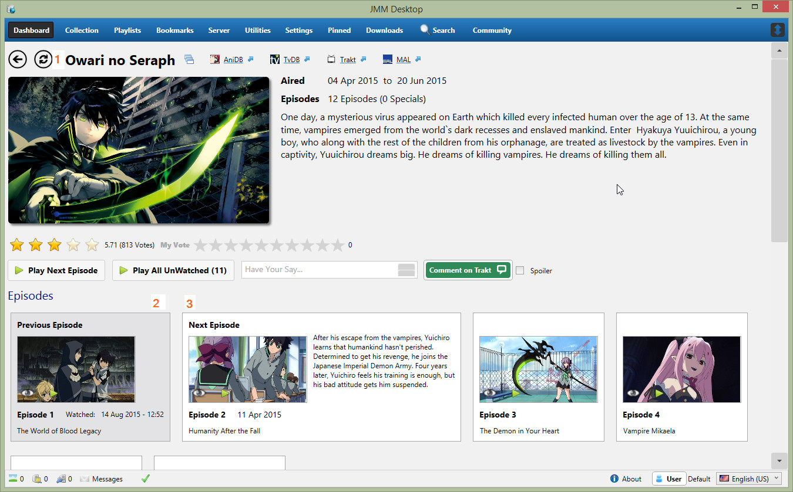
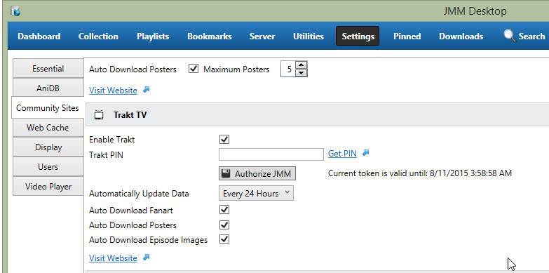
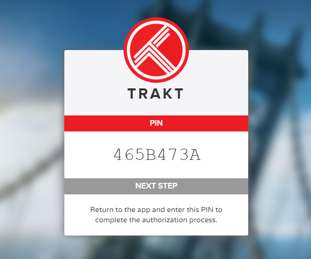
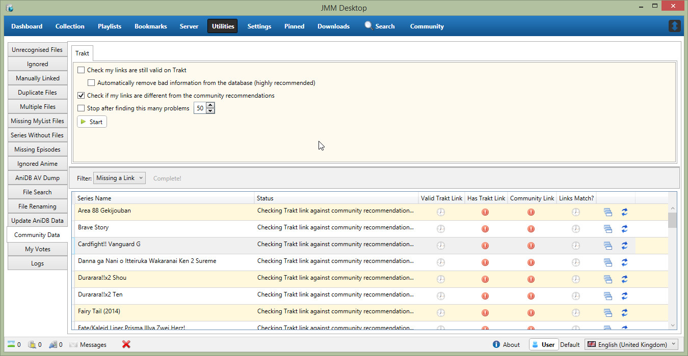
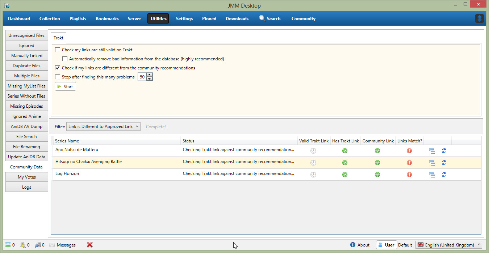
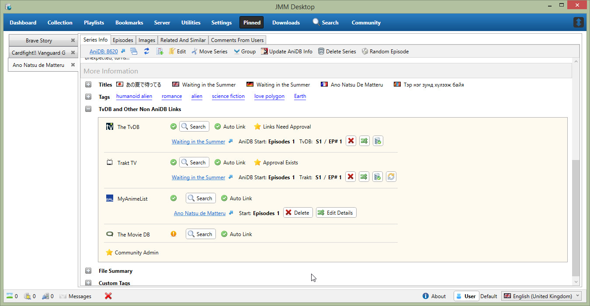
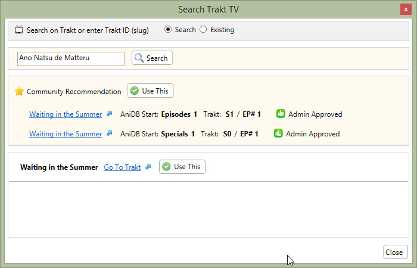
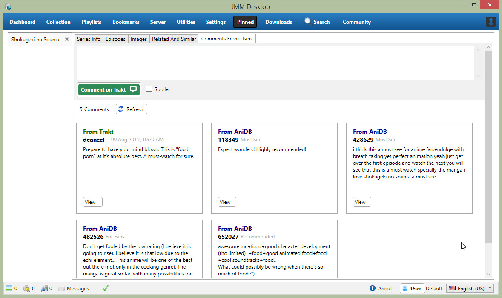

Changes in 3.4.4
Metro Dashboard

The series display in the Metro dashboard has received a few small tweaks
- 1 - A button has been added to refresh this series
- 2 - The previous episode you watch is now shown, so you can re-watch it easily, or just in case you accidentally marked it as watched
- 3 - The next episode to watch is highlighted and shows a few more details than other episodes
Trakt
The major focus of this release has been adding support for Version 2.0 of the Trakt API. For the last 6-9 months this has been broken in JMM
Most of this is invisible to the user, but a few things will be different and are detailed below

Trakt now uses OAuth to verify your credentials, and you are no longer required to enter your login/password into JMM
Once Trakt is enabled, simply click on the "Get PIN" link, and this will re-direct you to the Trakt website, and you will given a temporary PIN as shown below

Copy and paste this PIN into the text box in JMM Desktop, and then hit "Authorize JMM". At this point JMM stores a token which it can use to start sending data to Trakt.
Since Trakt has not been working for such a long time, you will probably find that a lot of your Trakt data is not valid anymore.
A new utility has been added to help fix this data

Step 1 - Select the first 2 check boxes and Press Start. This will check with Trakt that your exist data is correct, if it is not it will be removed from your local database
NOTE - This can take quite a while depending on the number of series you have. It also has the benefit of updating your existing data.
Step 2 - Un-check the first 2 check boxes and select the third "Check if my links are different from Community Recommendations". This will check the links you have selected against what the admins have selected as the correct links
You can then filter the list to see what series are missing a link entirely or differ from the recommendation.

From here you can open the series to fix the data manually

Click on the button to search, and it will show you the community recommendation, and you can use this instead

You can now see Trakt comments on the regular series view
